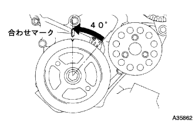

Remove the camshaft |
| 1. The engine Anda cover RH is removed |
Remove two bolts and two screws.
Remove the nut and remove the engine undercover RH.
| 2. Remove the cylinder head cover No.2 |
 |
Remove the four nuts and remove the Cylinder Hetted Cover No.2.
| 3. Cut the ventilation hose |
 |
Remove the clip and separate the ventilation hose from the cylinder head cover.
| 4. Ventilation hose No.2 disconnected |
Remove the clip and ventilation hose from the cylinder head cover.Cut 2.
| 5. Ignition coil No.1 |
Remove the connector and bolt of Ignitsushiyon coil and remove the entire Ignitsushiyon coil.
| 6. Cylinder head cover SUB-ASSY |
 |
Remove the bolts, nine and two nuts, and remove the cylinder head cover.
| 7. Camshaft No.2 |
|  |
 |
No.1 Cylinder compressed death point set.
Rotate the crankshaft damper correctly and match the timing mark (notch) to the chain cover 0 °.
Confirm that there is a timing mark of the camshaft timing gear at the position of the figure.
 |
Apply paint mark to each plate of the chain corresponding to the timing mark of the camshaft timing gear.
 |
Use the socket hexagon wrench 8 to remove the chien cover service hole scriey plug.
 |
Use a flathead screwdriver to hold the tensioner stopplate from the chain tensioner service hall.
Use a monkey wrench from the state where the stopper plate of the chain tensioner is raised, the hexagonal part for the Camshaft No.2 is slightly turned to the right to make the chain tensioner plunger is pressed.
 |
Hold the monkey wrench and remove the flather from the plunger in the back.
 |
The stopper plate of the chain tensioner is poured down and insert a φ3mm rod or a hexagonal wrench into the hole of the stopper plate from the locked state.
Fix it with tape so that the φ3mm stick or a hexagonal wrench does not fall off.
 |
The hexagon for service No.2 of the camshaft is held with a monkey wrench and loosened the flange bolt.
 |
In the order of the figure, remove the camshaft bearing No.1 and No.2.
Remove the flange bolt with a little camshaft No.2 and remove the camshaft No.2 and camshaft timing gear.
| 8. Remove the camshaft |
 |
In the order of the figure, remove the camshaft bearing kyatsup No.2.
 |
Hold the timing chain by hand and remove the camshaft.
 |
Hang the timing chain with a rope or wire.
| 9. Camshaft timing gear ASSY |
Fix the camshaft to the vise and make sure that the camshaft timing gear ASSY does not turn.
 |
As shown in the figure, the four -journal oil hole is closed with a vinyl tape.
Open a hole in the vinyl tape, which is blocking two areas (advanced oil holes, late -angle oil holes) on the other side.
Ol a hole in the vinyl tape (advanced angle oil hole, late -angle oil hole) 150kpa {1.5kgf/cm in two places)2Add the air pressure of about}.
When the air pressure on the late -angle oil hole side is weakened from the above state, it is confirmed that the camshaft timing gear ASSY rotates in the progressive direction.
When the camshaft timing gear ASSY moves to the maximum angle position, the air pressure on the late -angle oil hole is removed, and then the air pressure on the advanced angle oil hole is eliminated.
Remove the camshaft timing gear ASSY flange bolt.